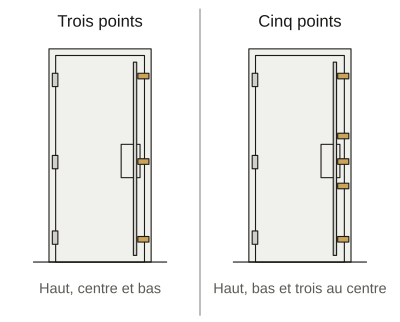
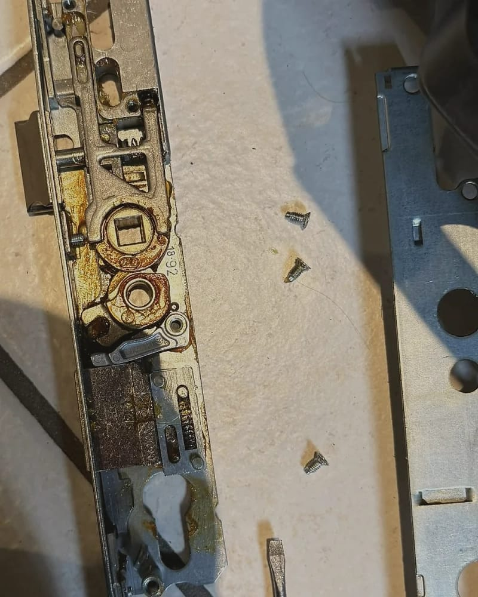
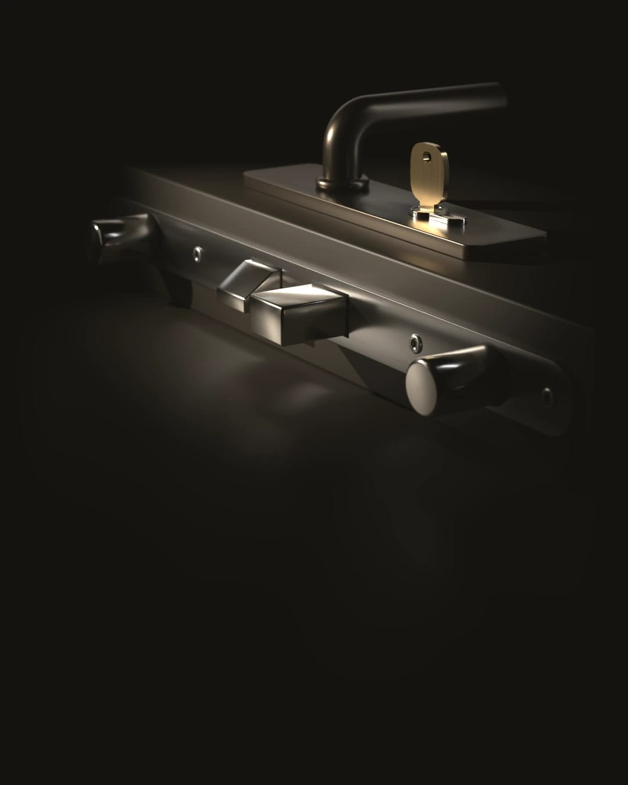
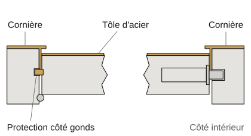
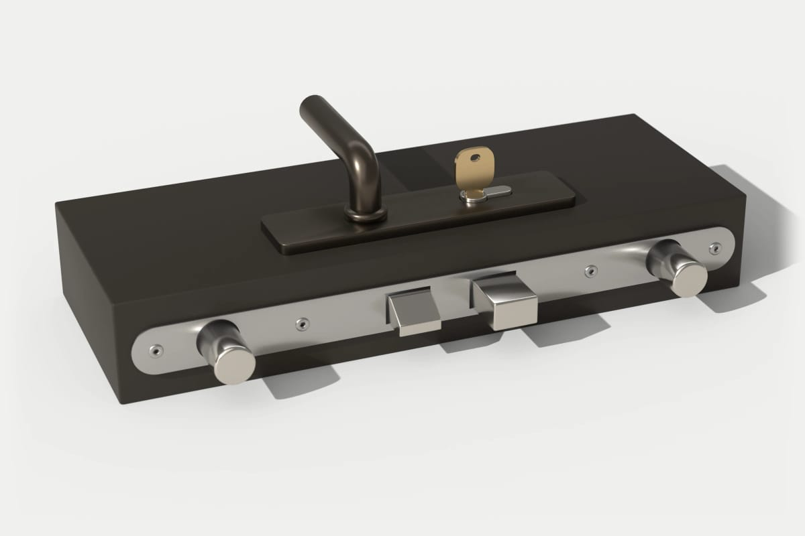

Multipoints et blindage, sur devis
Sur rendez-vous, la visite et le devis sont gratuits.
Pas encore partout en France : la liste des communes desservies est en bas de page.
Demander une visiteOu appeler le [À CONFIRMER : numéro de téléphone]
Avant de parler de trois ou cinq points, le serrurier vient mesurer la porte et regarder si son cadre tient.
Trois points, cinq points, blindage : ce que chacun change
Une serrure trois points verrouille la porte en haut, au centre et en bas. Une cinq points la verrouille en haut, en bas et en trois points au centre.
Le blindage garde la porte et la renforce : tôle d’acier, cornières sur le cadre et protections côté gonds.
En remplacement, la serrure neuve reprend en général les cotes de l’ancienne. Le serrurier les relève à la visite.
[À CONFIRMER : blindage de porte posé par l’équipe ou confié à une autre entreprise, et garantie de pose]

Ce que cache la tranche d’une porte
Un mécanisme oxydé sorti de sa porte, à côté d’une plaque neuve.

Ce que coûte une serrure multipoints ou un blindage


Le prix dépend de la porte : sa matière, son épaisseur, son cadre et son sens d’ouverture.
Voir le barème complet- Gratuits
- La visite et le devis écrit, sur rendez-vous.
- Sur devis
- La pièce et la pose, avec le délai.
De la visite à la pose

Vous décrivez la porte.
Appartement ou maison, matière si vous la connaissez, et des photos si vous pouvez.
Le serrurier vient la mesurer.
Il regarde la porte et le cadre. Il vous dit ce qui se renforce et ce qui se remplace.
Il vous remet un devis écrit et gratuit.
Il donne le délai de pose. Si une autre entreprise fait une partie du travail, vous savez son nom avant de signer.
Vous prenez le temps de décider.
Si vous ne donnez pas suite, vous ne payez rien.
Il pose la serrure ou le blindage.
Il vous remet ensuite la facture détaillée et toutes les clés.
Si vous signez le devis chez vous hors urgence, la loi vous laisse 14 jours pour changer d’avis (article L221-18 du Code de la consommation).
Avant de renforcer votre porte
Trois ou cinq points, lequel choisir ?
Ça dépend de la porte et du logement. Une porte palière au troisième étage n’est pas exposée comme une porte de maison sur la rue.
Le serrurier vous conseille à la visite. Votre contrat d’assurance a peut-être déjà tranché.
Ma serrure trois points est bloquée : c’est cette page ?
Si vous êtes dehors, non. C’est une ouverture de porte et il faut appeler.
Si la clé tourne dans le vide ou force, notre guide dit quoi vérifier avant de faire venir quelqu’un.
Je suis locataire : puis-je blinder ma porte ?
Pas sans l’accord écrit de votre propriétaire. Un blindage transforme le logement et la loi du 6 juillet 1989 (article 7) demande cet accord.
J’habite en immeuble : puis-je changer ma porte palière ?
Le règlement de copropriété peut imposer son aspect côté palier : couleur, matière ou poignée.
Lisez-le ou demandez au syndic avant de changer la porte.

Demander une visite
Trois photos suffisent pour préparer la visite : la porte entière, la serrure et la tranche de la porte ouverte.
Demander une visite pour renforcer ma portePorte bloquée maintenant ? Pas besoin de rendez-vous : appelez le [À CONFIRMER : numéro de téléphone]